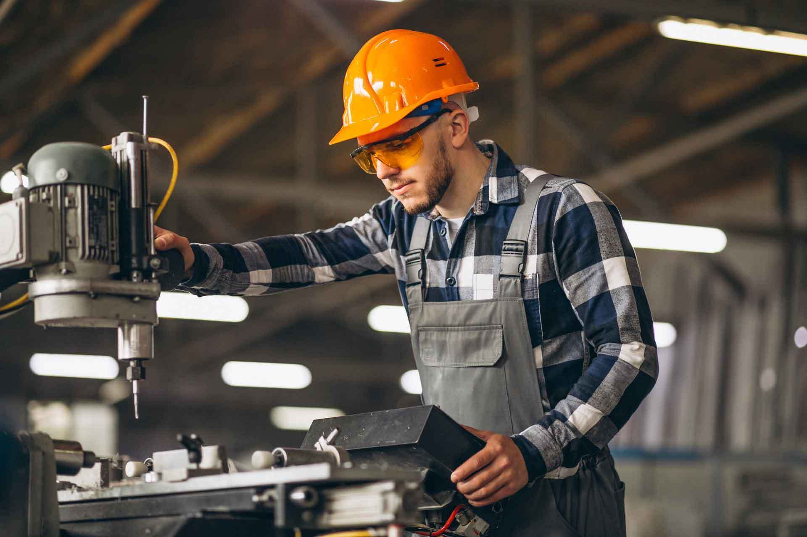

La ingeniería es una disciplina vasta que se divide en muchas ramas especializadas, cada una de las cuales tiene un enfoque particular en una aplicación científica, técnica o tecnológica específica. A continuación te explico las ramas más importantes de la ingeniería, detallando sus campos de aplicación, métodos y enfoques.
1. Ingeniería Civil

La ingeniería civil es una de las ramas más antiguas de la ingeniería. Se centra en el diseño, construcción y mantenimiento de infraestructuras, como edificios, carreteras, puentes, túneles, presas y sistemas de abastecimiento de agua.
Especializaciones dentro de la ingeniería civil:
Ingeniería estructural: Especialización que diseña estructuras como puentes, edificios, torres y estadios, asegurando su resistencia a fuerzas externas como terremotos, vientos y cargas de uso. Los ingenieros estructurales emplean herramientas de análisis como el diseño asistido por computadora (CAD), el método de los elementos finitos (FEM) y simulaciones para prever cómo se comportará una estructura en distintas condiciones.
Ingeniería geotécnica: Estudia las propiedades físicas y mecánicas de los suelos y las rocas, fundamentales para el diseño de cimientos seguros y duraderos. Los ingenieros geotécnicos realizan pruebas de resistencia y análisis de estabilidad para determinar el tipo de cimiento más adecuado, utilizando métodos como estudios de suelos, perforación, mapeo geológico y análisis de estabilidad de taludes.
Ingeniería hidráulica: Se ocupa de la gestión y el uso del agua mediante la construcción de canales, presas, embalses y sistemas de riego. Los ingenieros hidráulicos estudian el comportamiento de fluidos en movimiento y trabajan en proyectos para prevenir inundaciones, mejorar el suministro de agua potable y optimizar el riego agrícola. Utilizan herramientas de simulación de flujo y técnicas de modelado hidrológico para analizar y controlar el comportamiento del agua.
Ingeniería de transporte: Se dedica al desarrollo y mejora de infraestructuras de transporte como carreteras, ferrocarriles, aeropuertos y sistemas de transporte público. Su objetivo es mejorar la movilidad y reducir los tiempos de desplazamiento, minimizando al mismo tiempo el impacto ambiental. Utilizan software de planificación urbana y análisis de tráfico para diseñar sistemas eficientes y sostenibles.
2. Ingeniería mecánica
La ingeniería mecánica es la rama que se ocupa del diseño, análisis, fabricación y mantenimiento de sistemas mecánicos. Implica el estudio de fuerzas y movimiento, aplicados a todo tipo de dispositivos y estructuras.

Áreas de especialización:
Diseño de Máquinas: Implica la creación de componentes y sistemas mecánicos como motores, engranajes, bombas y equipos de transporte. Este campo abarca tanto el diseño funcional como la estética y la ergonomía del producto final. Los ingenieros de diseño emplean software de modelado 3D, cálculos de tensiones, análisis de vibración y métodos de simulación para optimizar el rendimiento de los sistemas mecánicos.
Termodinámica: La termodinámica estudia cómo se transforma la energía y el calor en sistemas como motores de combustión interna, turbinas y sistemas de refrigeración. Los ingenieros termodinámicos diseñan sistemas de HVAC (calefacción, ventilación y aire acondicionado), sistemas de generación de energía y dispositivos de refrigeración industrial. Usan principios de transferencia de calor, termodinámica de gases y ciclos termodinámicos.
Ingeniería de Materiales: Estudia la estructura, propiedades y procesamiento de materiales como metales, polímeros, cerámicas y compuestos avanzados. Esta especialización busca desarrollar materiales que sean resistentes, ligeros y adecuados para condiciones específicas, como el calor extremo o la corrosión. Los ingenieros de materiales aplican técnicas como la microscopía electrónica, la espectroscopia de rayos X y pruebas de fatiga de materiales.
Dinámica y Control: Esta área se enfoca en la comprensión de sistemas en movimiento y el diseño de mecanismos de control para regular su comportamiento. Los ingenieros de control aplican esta disciplina en robótica, sistemas de vehículos autónomos y procesos de fabricación avanzada, utilizando sistemas de control retroalimentado, modelado matemático y programación para automatizar y mejorar la precisión de los sistemas.
3. Ingeniería Eléctrica
La ingeniería eléctrica estudia y aplica principios de la electricidad y el electromagnetismo en la creación de sistemas eléctricos. Es fundamental en sectores como la generación y distribución de energía, las telecomunicaciones y la automatización.

Subdisciplinas dentro de la ingeniería eléctrica:
Sistemas de Potencia: En esta especialización, los ingenieros trabajan en la generación, transmisión y distribución de energía eléctrica. Diseñan redes eléctricas y estaciones de distribución que garantizan el suministro constante de electricidad a hogares, empresas e industrias. Trabajan en proyectos de energías renovables como la eólica, solar e hidroeléctrica, e implementan tecnologías de almacenamiento y red inteligente.
Electrónica de Potencia: Se dedica a la conversión y control de energía eléctrica mediante dispositivos como rectificadores, inversores y convertidores de corriente. Estos dispositivos son esenciales en sistemas que requieren una gestión precisa de la energía, como los automóviles eléctricos, electrodomésticos y sistemas de carga de baterías. Los ingenieros en electrónica de potencia utilizan conocimientos en semiconductores de potencia y tecnología de control.
Ingeniería de Control: Desarrolla sistemas que monitorean y ajustan el comportamiento de otros sistemas mecánicos o eléctricos para mantener condiciones deseadas. Estos sistemas incluyen controladores para la automatización de procesos industriales, regulación de temperatura y estabilidad de vuelo en aeronaves. Usan modelos matemáticos, simulación y algoritmos para implementar sistemas de retroalimentación y control adaptativo.
Telecomunicaciones: Diseña y gestiona redes de comunicación que transmiten información entre dispositivos y sistemas. Los ingenieros en telecomunicaciones trabajan en redes móviles, fibra óptica, satélites y sistemas de transmisión inalámbrica. Estudian la teoría de la señal y usan modelos de comunicación, modulación y sistemas de codificación para optimizar la transmisión y recepción de datos.
4. Ingeniería Electrónica
Relacionada estrechamente con la ingeniería eléctrica, la electrónica se enfoca en el estudio de circuitos y dispositivos que controlan el flujo de electrones, como los transistores, microchips y otros componentes de baja potencia.

Especializaciones en ingeniería electrónica:
Electrónica Digital: Se centra en el diseño y desarrollo de circuitos digitales que procesan información en sistemas binarios (0 y 1). Estos circuitos incluyen microprocesadores, FPGA (Field Programmable Gate Array) y sistemas embebidos. La electrónica digital es fundamental en la informática, telecomunicaciones y dispositivos como computadoras, teléfonos inteligentes y electrodomésticos inteligentes.
Electrónica Analógica: Trabaja con circuitos que procesan señales continuas, como amplificadores de audio, receptores de radio y equipos de medición. Los ingenieros en electrónica analógica optimizan estos circuitos para mejorar la calidad de la señal, la estabilidad y la eficiencia energética. Utilizan técnicas de diseño en amplificación, filtrado y procesamiento de señal.
Microelectrónica: Diseña y fabrica dispositivos a escala microscópica, como microchips y transistores. Estos componentes son fundamentales para las computadoras, teléfonos móviles y dispositivos electrónicos. La microelectrónica se centra en la miniaturización y la eficiencia energética de los dispositivos, usando técnicas avanzadas de litografía y tecnología CMOS (Complementary Metal-Oxide-Semiconductor).
Ingeniería de Comunicación: Se especializa en la transmisión y procesamiento de señales para sistemas de comunicación, como los de telefonía móvil, radio, y televisión. Esta especialización abarca la teoría de la información, técnicas de modulación, antenas y procesamiento de señales para mejorar la calidad y confiabilidad de las comunicaciones.
5. Ingeniería Química
La ingeniería química utiliza principios de la química, la física y las matemáticas para diseñar y optimizar procesos de producción de productos químicos, materiales y energía.

Áreas clave de la ingeniería química:
Procesos Industriales: Optimiza los procesos de producción para la fabricación eficiente de productos químicos, petroquímicos y farmacéuticos. Los ingenieros químicos diseñan reactores, separadores y sistemas de purificación, buscando maximizar la eficiencia y reducir el consumo de energía y la generación de residuos.
Ingeniería de Reacciones: Estudia cómo optimizar las reacciones químicas en reactores, controlando variables como temperatura, presión y concentración para mejorar el rendimiento. Los ingenieros de reacciones trabajan en industrias como la petroquímica, la producción de alimentos y la biotecnología.
Ingeniería Ambiental: Se ocupa de minimizar el impacto ambiental de los procesos industriales, desarrollando tecnologías de tratamiento de residuos, control de emisiones y uso sostenible de los recursos. Los ingenieros ambientales trabajan en la mitigación del cambio climático, desarrollando soluciones para reducir emisiones de carbono y reciclaje de residuos.
Biotecnología y Bioingeniería: Emplea organismos vivos y células para la producción de productos químicos, biocombustibles y medicamentos. En la biotecnología, los ingenieros diseñan sistemas de cultivo celular, bioprocesos y técnicas de fermentación para producir enzimas, vacunas y bioplásticos.
6. Ingeniería de Sistemas y Computación
Esta rama se enfoca en el diseño y desarrollo de sistemas informáticos y computacionales. Incluye software, hardware y redes, así como la gestión de la información.

Subdisciplinas dentro de ingeniería de sistemas:
Ingeniería de Software: Especialización orientada al diseño, desarrollo, prueba y mantenimiento de aplicaciones y sistemas de software. Los ingenieros de software aplican metodologías como desarrollo ágil y pruebas automatizadas, y utilizan lenguajes de programación (Java, Python, C++) para crear aplicaciones para diferentes plataformas (web, móviles, embebidas).
Ciencia de Datos: Implica el análisis, interpretación y modelado de grandes volúmenes de datos para obtener información útil y patrones. Los ingenieros de datos desarrollan algoritmos de aprendizaje automático y redes neuronales que ayudan en áreas como la predicción de ventas, diagnóstico médico y recomendaciones personalizadas en plataformas digitales.
Redes y Telecomunicaciones: Los ingenieros en esta área diseñan y optimizan infraestructuras de redes de datos, garantizando el flujo seguro y eficaz de información. Implementan redes privadas y públicas, y trabajan con tecnologías de conectividad, como Wi-Fi, 5G y fibra óptica, utilizando protocolos de comunicación (TCP/IP, HTTP, etc.) y técnicas de encriptación para asegurar los datos.
Ciberseguridad: Se centra en proteger los sistemas de información contra ataques y amenazas, asegurando la integridad, confidencialidad y disponibilidad de los datos. Los ingenieros de ciberseguridad aplican técnicas de criptografía, desarrollan políticas de seguridad, y simulan ataques (como pruebas de penetración) para identificar vulnerabilidades en los sistemas.
7. Ingeniería Industrial

La ingeniería industrial se dedica a optimizar sistemas y procesos en fábricas, oficinas, y otros ambientes, enfocándose en maximizar la productividad y minimizar costos.
Especializaciones dentro de la ingeniería industrial:
Gestión de Operaciones: Se ocupa de la administración eficiente de procesos de producción y de servicios. Los ingenieros en esta área optimizan los recursos, minimizan tiempos y costos, y garantizan la calidad del producto final. Utilizan herramientas como el análisis de capacidad y el control de inventario para garantizar una cadena de suministro eficiente.
Ingeniería de Manufactura: Enfocada en la mejora y control de sistemas de producción. Los ingenieros de manufactura se aseguran de que los procesos productivos sean eficientes y económicos mediante la automatización, la robótica y el uso de tecnologías como manufactura aditiva (impresión 3D). Trabajan en la selección de materiales y técnicas de ensamblaje para maximizar la durabilidad y funcionalidad de los productos.
Logística y Cadena de Suministro: Se encarga de gestionar el flujo de bienes y servicios desde el proveedor hasta el consumidor final, optimizando el almacenamiento, transporte y distribución de productos. Los ingenieros de logística implementan modelos de gestión de inventarios, trazabilidad y redes de distribución eficientes para minimizar costos y reducir tiempos de entrega.
Ingeniería de Calidad: Enfocada en el desarrollo e implementación de estándares y metodologías de control de calidad, como ISO y Seis Sigma, para garantizar que los productos cumplan con las especificaciones y regulaciones necesarias. Los ingenieros de calidad realizan pruebas, auditorías y análisis de defectos para asegurar que cada etapa del proceso productivo se mantenga bajo los estándares de calidad establecidos.
8. Ingeniería Ambiental

La ingeniería ambiental se centra en resolver problemas ambientales mediante soluciones tecnológicas y científicas, gestionando la contaminación y promoviendo el desarrollo sostenible.
Áreas de especialización en ingeniería ambiental:
Control de Contaminación: Los ingenieros en esta especialización diseñan sistemas y tecnologías para reducir la contaminación del aire, agua y suelo. Trabajan en la depuración de aguas residuales, tratamiento de gases industriales y técnicas de remediación ambiental para eliminar contaminantes en sitios afectados.
Gestión de Residuos: Se enfoca en la recolección, tratamiento y disposición de residuos sólidos y líquidos, así como en la minimización de desechos industriales. Los ingenieros de residuos desarrollan programas de reciclaje, compostaje y tecnologías de transformación de residuos en energía (waste-to-energy) para reducir el impacto ambiental de los desechos.
Recursos Hídricos: Los ingenieros de esta especialización se centran en el uso, distribución y conservación del agua. Trabajan en proyectos para garantizar el suministro de agua potable y la gestión de recursos hídricos para la agricultura e industria. Utilizan técnicas de modelado hidrológico, estudios de cuencas y sistemas de irrigación para optimizar el uso del agua y prevenir escasez.
Energía Sostenible: Esta especialización se dedica a la creación y optimización de fuentes de energía limpias y renovables, como la energía solar, eólica, hidráulica y geotérmica. Los ingenieros de energía sostenible desarrollan tecnologías que permiten una transición energética para reducir la dependencia de combustibles fósiles y disminuir las emisiones de gases de efecto invernadero.
9. Ingeniería en Telecomunicaciones

La ingeniería en telecomunicaciones se dedica al desarrollo y mantenimiento de sistemas de comunicación. Incluye el diseño de redes de transmisión de datos y la gestión de señales.
Áreas dentro de la ingeniería en telecomunicaciones:
Redes de Comunicación: Especialización centrada en el diseño y operación de redes de telecomunicaciones, como internet, telefonía móvil y redes de datos empresariales. Los ingenieros en redes implementan y administran protocolos de red y diseñan arquitecturas de comunicación que soporten gran cantidad de datos y usuarios.
Sistemas de Transmisión: Enfocados en la tecnología que permite transmitir datos a largas distancias de forma eficiente y con calidad. Los ingenieros de transmisión diseñan y mantienen sistemas como satélites, radio, fibra óptica y tecnologías inalámbricas para asegurar la conectividad y reducir la pérdida de señal.
Procesamiento de Señales: Los ingenieros en esta área optimizan la recepción y transmisión de datos, y desarrollan técnicas para la mejora de señales de audio y video, empleando filtros, compresión y codificación. Aplican algoritmos para eliminar ruido y mejorar la claridad y precisión en la transmisión de señales en sistemas de comunicación.
Tecnologías de Información y Comunicación (TIC): Esta especialización combina las comunicaciones y la informática para desarrollar sistemas y aplicaciones de información, como redes de comunicaciones de voz y datos. Se ocupan de la infraestructura que permite el intercambio de información a través de internet, redes corporativas, y tecnologías móviles.
10. Bioingeniería
La bioingeniería es una disciplina que combina ingeniería con biología y medicina. Su objetivo es desarrollar soluciones para problemas en el ámbito de la salud y la biología.
Subcampos de la bioingeniería:

Ingeniería Biomédica: Se enfoca en el desarrollo de dispositivos médicos y sistemas de diagnóstico que mejoran la atención de la salud. Incluye la creación de prótesis, marcapasos, equipos de imágenes médicas (rayos X, resonancias magnéticas) y dispositivos de monitoreo para hospitales.
Ingeniería Genética: Aplica técnicas de manipulación de ADN y proteínas para modificar organismos y desarrollar tratamientos médicos. Esta área trabaja en el desarrollo de terapias génicas, edición genética (como CRISPR) y biotecnología aplicada en medicamentos, como anticuerpos monoclonales y terapias personalizadas.
Biomateriales: Se enfoca en el diseño y aplicación de materiales compatibles con el cuerpo humano. Estos materiales se utilizan para desarrollar implantes, prótesis, válvulas cardíacas, stents y otros dispositivos médicos. Los ingenieros de biomateriales estudian la biocompatibilidad y desarrollan materiales que sean duraderos, resistentes y seguros para el uso médico.
Biomecánica: Analiza el movimiento y la mecánica del cuerpo humano para diseñar dispositivos que mejoren la movilidad, como prótesis, exoesqueletos y sillas de ruedas. La biomecánica también se aplica en el diseño de equipos deportivos y de rehabilitación, así como en estudios sobre la ergonomía en el ambiente de trabajo y la prevención de lesiones.